Для вёрски сайтов по PSD-макету в программе Photoshop html-верстальщику достаточно двух элементов:
| ОРИЕНТАЦИЯ ПО МАКЕТУ | |
| 100% маштабирование | (Ctrl + 1) |
| Показать макет полностью | (Ctrl + 0) |
| Ручное маштабирование | (Alt + scroll) |
| Прокрутка по горизонтали | (Ctrl + scroll) |
| Быстрая прокрутка по вертикали | (Shift + scroll) |
| Двигать макет | (ЛКМ + зажатый пробел) |
| Показать\убать направляющие | (Ctrl + ;)\(Ctrl + H) |
| Показать\убать линейки | (Ctrl + R) |
| Просмотр - Показать (отображение вспомогательных элементов) | |
| ОБЩЕЕ | |
| Восстановление документа как на последнем сохранении | F12 |
| Экспорт для web | (Ctrl + Shift + Alt + S) |
| Создать новый документ | (Ctrl + N) |
| Save | (Ctrl + S) |
| Close | (Ctrl + W) |
| Copy | (Ctrl + C) |
| Paste | (Ctrl + V) |
| Cut | (Ctrl + X) |
| Отмена предыдушего изменения | (Ctrl + Z) |
| Отмена изменений, начиная с последнего | (Ctrl + Alt + Z) |
| СЛОИ | 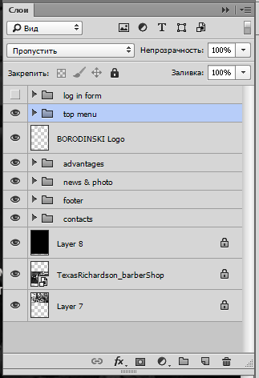 |
| Все слои показаны в панели Слои(Layers) | |
| Фильтр слоёв | 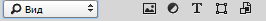 |
|
РЕЖИМ НАЛОЖЕНИЯ СЛОЁВ и ОБЩАЯ НЕПРОЗРАЧНОСТЬ выбранного слоя или папки В PSD-макетах сайтов используются 2 вида наложения: 1. ПРОПУСТИТЬ\Pass Trought (для папок); 2. ОБЫЧНЫЕ\Normal (для слоёв). |
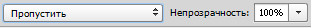 |
|
ЗАЛИВКА - общая непрозрачность содержимого слоя и ПАНЕЛЬ БЛОКИРОВКИ СЛОЁВ |
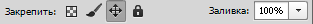 |
| Показать\скрыть слой | 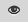 |
| Показать только выбранный слой | (Alt + иконка глаза) |
| Блокировать слой | |
| Блокировать перемещение слоя | 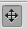 |
| ИНСТРУМЕНТЫ для СЛОЁВ |
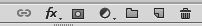 + Окно "Слои\Layers" |
| Связать слои (будут перемещаться вместе) | 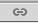 |
| Эффекты | 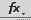 |
| Маска | 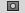 |
| Корректирующий слой\Слой-заливка | 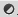 |
| Создать: ГРУППУ СЛОЁВ НОВЫЙ СЛОЙ УДАЛИТЬ СЛОЙ |
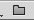 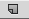 |
|
ЭФФЕКТЫ Двойной клик по названию откроет окно эффектов |
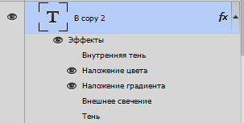 |
| Окно эффектов | 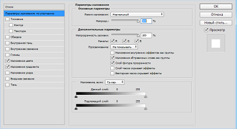 |
| Работа с ТЕКСТОМ | |
|
Копировать CSS Позиционирование не потребуется Цвет в rgba font-family без типа шрифта Нет вендерных префиксов на эффектах Много других свойств отсутствует |
ПКМ на текстовый слой - Копировать CSS |
| ВРУЧНУЮ | 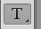 ► 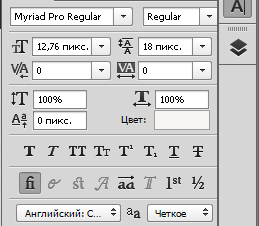 |
| ИЗМЕРЕНИЕ РАЗМЕРОВ | |
|
ИНСТРУМЕНТ ЛИНЕЙКА C зажатым Shift - точно по гор. или вер. L1 - расстояние в пикселях |
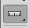 ► 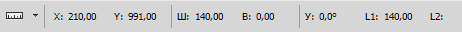 |
| ИЗМЕРЕНИЕ ЦВЕТА | |
|
ИНСТРУМЕНТ ПИПЕТКА |
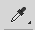 |
| ЭКСПОРТ ИЗОБРАЖЕНИЙ | |
| 1. Выбираем нужный слой или группу слоёв, которые неообходимо экспортировать, с помощью инструмента "Перемещение" (Move tool) с автовыбором или кликаем по слою ЛКМ (с зажатым Ctrl - выделяем несколько слоёв) | 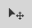 |
| 2. Дублируем слои в новый файл | ПКМ - Дубликат слоёв... - Документ: новый, Имя: New |
| 3. Подрезаем изображение | Изображение - Тримминг... |
| 4. Экспортируем изображение |
Ctrl + Alt + Shift + S или Файл - Сохранить для Web... |
| 5. Выбираем формат, параметры и СОХРАНЯЕМ | |
| Экспорт мелкой графики нарезкой нескольких областей | |
|
1. Выбираем инструмент "Раскройка" 2. Выделяем инструментом несколько областей 3. Выбираем инструмент "Выделение фрагмента" и двойным кликом по названию объекта задаём имена ПОЛЬЗОВАТЕЛЬКИХ ОБЛАСТЕЙ 4. Задаём имена АВТОМАТИЧЕСКИХ ОБЛАСТЕЙ (серых, станут синими после задания имён) 5. Ctrl + Alt + Shift + S - ЭКСПОРТИРУЕМ Убрать выделения: ПРОСМОТР - ПОКАЗАТЬ - СНЯТЬ ВЫДЕЛЕНИЯ |
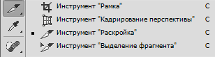 |
|
Экспорт текстур (1-й способ) - для видимых повторяющихся областей |
|
|
1. Объединить ВСЕ СЛОИ 2. Увеличиваем масштаб 3. Инструмент "Рамка" (см. выше) 4. Выделяем повторяющийся фрагмент и нажимаем Enter 5. Можно экспортировать |
СЛОИ - ВЫПОЛНИТЬ СВЕДЕНИЕ |
|
Экспорт текстур (2-й способ) - если нет явного фрагмента повторения |
|
|
1. Выбираем слой содержащий текстуру инструментом "Перемещение" 2. Увеличиваем и обрезаем "Рамкой" размером 50х50 или 100х100 пикселей - Галочка 3. Экспортируем |
|
| ОПЕРАЦИИ (Action) | |
|
Инструмент для автоматизации процессов в PS |
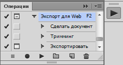 |